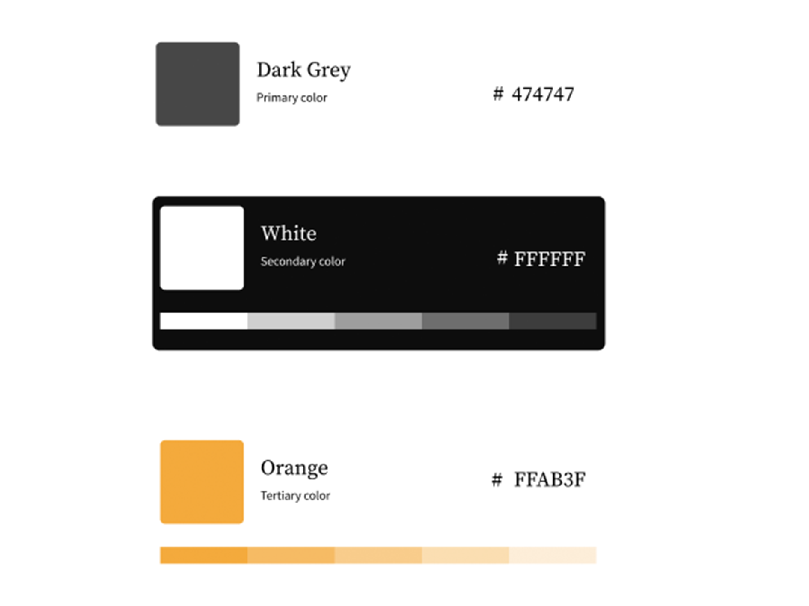

Kunst Pluss-Informasjonsarkitektur
I dette skoleprosjektet var breifen å Velg en av de utvalgte publikasjonene og lag en nettside med publikasjonens innhold og design som utgangspunkt. Det er lov å finne en egen publikasjon, forutsatt at faglærer godkjenner publikasjonen i forkant. Du vil få innholdet til publikasjonen som tekst, foto og/eller illustrasjoner levert samlet.
Verktøy
Figma og VS Code
Innsiktsarbeid
Kunst pluss er et magasin.....fortsett siden
Designsystem
Som font valgte vi å beholde fonten som ble brukt i magasinet-Source Serif Pro. Det er en klassisk font med seriffer, noe vi bevisst ville ha med for å beholde følelsen av en et magasin på trykk. Vi utforsket med ulike størrelser, og endte opp med å skille på hva kunsteren sa ved å gi hennes svar i kursiv.

Farger
Fargevalget er minimalt, og består av en gråfarge, og en oransjfarge som kontrast. Vi tok dette valget for å beholde integriteten til magasinet, ettersom de bruker en oransj som fargre gjennom andre artikler. Vi ville også hylle bildene til kunstneren, og valgte derfor åå beholde fargevalget simpelt. Gjennom artikkelen valgte vi ut noen sitater fra kunsteren, og førstørret de med en h2, og farvela de oransje.
